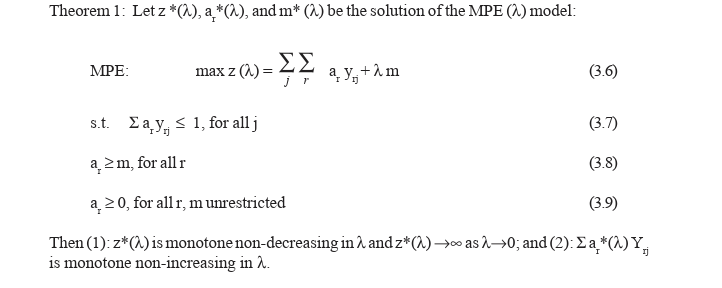
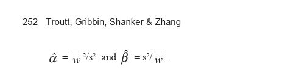

Stefan Arnborg
Royal Institute of Technology and
Swedish Institute of Computer Science, Sweden
This chapter reviews the fundamentals of inference, and gives a motivation for Bayesian analysis. The method is illustrated with dependency tests in data sets with categorical data variables, and the Dirichlet prior distributions. Principles and problems for deriving causality conclusions are reviewed, and illustrated with Simpson’s paradox. The selection of decomposable and directed graphical models illustrates the Bayesian approach. Bayesian and EM classification is shortly described. The material is illustrated on two cases, one in personalization of media distribution, one in schizophrenia research. These cases are illustrations of how to approach problem types that exist in many other application areas.
Data acquired for analysis can have many different forms. We will describe the analysis of data that can be thought of as samples drawn from a population, and the conclusions will be phrased as properties of this larger population. We will focus on very simple models. As the investigator’s understanding of a problem area improves, the statistical models tend to become complex. Some examples of such areas are genetic linkage studies, ecosystem studies, and functional MRI investigations, where the signals extracted from measurements are very weak but potentially extremely useful for the application area. Experiments are typically analyzed using a combination of visualization, Bayesian analysis, and conventional test- and confidence-based statistics. In engineering and commercial applications of data mining, the goal is not normally to arrive at eternal truths, but to support decisions in design and business. Nevertheless, because of the competitive nature of these activities, one can expect well-founded analytical methods and understandable models to provide more useful answers than ad hoc ones
This text emphasizes characterization of data and the population from which it is drawn with its statistical properties. Nonetheless, the application owners have typically very different concerns: they want to understand; they want to be able to predict and ultimately to control their objects of study. This means that the statistical investigation is a first phase that must be accompanied by activities extracting meaning from the data. There is relatively little theory on these later activities, and it is probably fair to say that their outcome depends mostly on the intellectual climate of the team—of which the analyst is only one member.
Our goal is to explain some advantages of the Bayesian approach and to show how probability models can display the information or knowledge we are after in an application. We will see that, although many computations of Bayesian data-mining are straightforward, one soon reaches problems where difficult integrals have to be evaluated, and presently only Markov Chain Monte Carlo (MCMC) and expectation maximization (EM) methods are available. There are several recent books describing the Bayesian method from both a theoretical (Bernardo & Smith, 1994) and an application-oriented (Carlin & Louis, 1997) perspective. Particularly, Ed Jaynes’ unfinished lecture notes, now available in (Jaynes, 2003) have provided inspiration for me and numerous students using them all over the world. A current survey of MCMC methods, which can solve many complex evaluations required in advanced Bayesian modeling, can be found in the book Markov Chain Monte Carlo in Practice (Gilks, Richardson, & Spiegelhalter 1996). Theory and use of graphical models have been explained by Lauritzen (1996) and Cox and Wermuth (1996). A tutorial on Bayesian network approaches to data mining is found in Heckerman (1997). We omit, for reasons of space availability, a discussion of linear and generalized linear models, which are described, e.g., by Hand, Mannila, and Smyth (2001). Another recent technique we omit is optimal recursive Bayesian estimation with particle filters, which is an important new application of MCMC (Doucet, de Freitas & Gordon 2001).
Statistical inference has a long history, and one should not assume that all scientists and engineers analyzing data have the same expertise and would reach the same type of conclusion using the objectively “right” method in the analysis of a given data set. Probability theory is the basis of statistics, and it links a probability model to an outcome. But this linking can be achieved by a number of different principles. A pure mathematician interested in mathematical probability would only consider abstract spaces equipped with a probability measure. Whatever is obtained by analyzing such mathematical structures has no immediate bearing on how we should interpret a data set collected to give us knowledge about the world. When it comes to inference about real-world phenomena, there are two different and complementary views on probability that have competed for the position of “the” statistical method. With both views, we consider models that tell how data is generated in terms of probability. The models used for analysis reflect our - or the application owner’s - understand ing of the problem area. In a sense they are hypotheses, and in inference a hypothesis is often more or less equated with a probability model. Inference is concerned with saying something about which probability model generated our data — for this reason inference was sometimes called inverse probability (Dale, 1991).
The first applications of inference used Bayesian analysis, where we can directly talk about the probability that a hypothesis H generated our observed data D. Using probability manipulation and treating both data D and hypotheses H1 and H2 as events we find:
This rule says that the odds we assign to the choice between H1 and H 2, the prior odds PH1 ( )/P(H2 ), are changed to the posterior odds P(H1 |D)/P(H 2 |D), by multipli cation with the Bayes factor P(D |H 1 )/P(D |H2 ). In other words, the Bayes factor contains all information provided by the data relevant for choosing between the two hypotheses. The rule assumes that probability is subjective, dependent on information the observer holds, e.g., by having seen the outcome D of an experiment. If we have more than two hypotheses, or a parameterized hypothesis, similar calculations lead to formulas defining a posterior probability distribution that depends on the prior distribution:

where f (λ ) is the prior density and f (λ |D) is the posterior density, and ∝ is a sign that indicates that a normalization constant (independent of λ but not of D) has been omitted. For posteriors of parameter values the concept of credible set is important. A q-credible set is a set of parameter values among which the parameter has a high and known probability q of lying, according to the posterior distribution. The Bayes factor estimates the support given by the data to the hypotheses. Inevitably, random variation can give support to the “wrong” hypothesis. A useful rule is the following: if the Bayes factor is k in favor of H1 , then the probability of getting this factor or larger from an experiment where H2 was the true hypothesis is less than 1/k. For most specific hypothesis pairs, the bound is much better (Royall, 2000)
We will see how Bayes’ method works with a small example, in fact the same example used by Thomas Bayes(1703 — 1762). Assume we have found a coin among the belongings of a notorious gambling shark. Is this coin fair or unfair? The data we can obtain are a sequence of outcomes in a tossing experiment, represented as a binary string. Let one hypothesis be that the coin is fair, Hf . Then P(D |H f )= 2−n, where n=|D| is the number of tosses made. We must also have another hypothesis that can fit better or worse to an outcome. Bayes used a parameterized model where the parameter is the unknown probability, p, of getting a one in a toss. For this model Hp , we have P(D |H p )= ps(1− p)f for a sequence D with s successes and f failures. The probability of an outcome under Hp is clearly a function of p. If we assume, with Bayes, that the prior distribution of p is uniform in the interval from 0 to 1, we get by Equation (2) a posterior distribution f(p|D)= cps(1− p)f, a Beta distribution where the normalization constant is c= (n+1)!/(s!f!). This function has a maximum at the observed frequency s/n. We cannot say that the coin is unfair just because s is not the same as f, since the normal variation makes inequality very much more likely than equality for a large number of tosses even if the coin is fair. If we want to decide between fairness and unfairness we must introduce a composite hypothesis by specifying a probability distribution for the parameter p in Hp . A conventional choice is again the uniform distribution. Let Hu be the hypothesis of unfairness, expressed as Hp with a uniform distribution on the parameter p. By integration we find P( D|Hu ) =s!f! / (n+1)!. In other words, the number of ones in the experiment is uniformly distributed. Suppose now that we toss the coin twelve times and obtain the sequence 000110000001, three successes and nine failures. The Bayes factor in favor of unfairness is 1.4. This is a too small value to be of interest. Values above 3 are worth mentioning, above 30 significant, and factors above 300 would give strong support to the first hypothesis. In order to get strong support to fairness or unfairness in the example we would need much more than 12 tosses.
The posterior gives a numerical measure of belief in the two hypotheses compared. Suppose our task is to decide by choosing one of them. If the Bayes factor is greater than one, H1 is more likely than H2 , assuming no prior preference of either. But this does not necessarily mean that H1 is true, since the data can be misleading by natural random fluctuation. The recipe for choosing is to make the choice with smallest expected cost (Berger, 1985). This rule is also applicable when simultaneously making many model comparisons.
When making inference for the parameter value of a parameterized model, equation (2) gives only a distribution over the parameter value. If we want a point estimate l of the parameter value λ , we should also use Bayesian decision theory. We want to minimize the loss incurred by stating the estimate l when the true value is λ , L(l, λ ). But we do not know λ . As with a discrete set of decision alternatives, we minimize the expected loss over the posterior for λ , by integration. If the loss function is the squared error, the optimal estimator is the mean of f(λ |D); if the loss is the absolute value of the error, the optimal estimator i the median; with a discrete parameter space, minimizing the probability of an error (no matter how small) gives the Maximum A Posteriori (MAP) estimate. As an example, when tossing a coin gives s heads and f tails, the posterior with a uniform prior is f(p|s,f)= cps(1− p)f, the MAP estimate for p is the observed frequency s/(s+f), the mean estimate is the Laplace estimator (s+1)/(s+f+2) and the median is a fairly complicated quantity expressible, when s and f are known, as the solution to an algebraic equation of high degree.
The irrelevance of long run properties of hypothesis probabilities made one school of statistics reject subjective probability altogether. This school works with what is usually known as objective probability. Data is generated in repeatable experiments with a fixed distribution of the outcome. The device used by a practitioner of objective probability is testing. For a single hypothesis H, a test statistic is designed as a mapping f of the possible outcomes to an ordered space, normally the real numbers. The data probability function P(D|H) will now induce a distribution of the test statistic on the real line. We continue by defining a rejection region, an interval with low probability, typically 5% or 1%. Next, the experiment is performed or the data D is obtained, and if the test statistic f(D) falls in the rejection region, the hypothesis H is rejected. For a parameterized hypothesis, rejection depends on the value of the parameter. In objective probability inference, we use the concept of a confidence interval, whose definition is unfortunately rather awkward and is omitted (it is discussed in all elementary statistics texts). Unfortunately, there is no strong reason to accept the null hypothesis just because it could not be rejected, and there is no strong reason to accept the alternative just because the null was rejected. But this is how testing is usually applied. The p-value is the probability of obtaining a test statistic not less extreme than the one obtained, under the null hypothesis, so that a p-value less than 0.01 allows one to reject the null hypothesis on the 1% level.
Let us analyze coin tossing again. We have the two hypotheses Hf and Hu . Choose H f , the coin is fair, as the null hypothesis. Choose the number of successes as test statistic. Under the null hypothesis we can easily compute the p-value, the probability of obtaining nine or more failures with a fair coin tossed 12 times, which is .075. This is 7.5%, so the experiment does not allow us to reject fairness at the 5% level. On the other hand, if the testing plan was to toss the coin until three heads have been seen, the p-value should be computed as the probability of seeing nine or more failures before the third success, which is .0325. Since this is 3.25%, we can now reject the fairness hypothesis at 5%. The result of a test depends thus not only on the choice of hypothesis and significance level, but also on the experimental design, i.e., on data we did not see but could have seen.
Considering that both types of analysis are used heavily in practical applications by
the most competent analysts, it would be somewhat optimistic if one thought that one of these approaches could be shown right and the other wrong. Philosophically, Bayesianism has a
strong normative claim in the sense that every method that is not equivalent to Bayesianism
can give results that are irrational in some circumstances, for example if one insists that
inference should give a numerical measure of belief in hypotheses that can be translated to
a fair betting odds (de Finetti, 1974; Savage, 1954). Among stated problems with Bayesian
analysis the most important is probably a non-robustness sometimes observed with respect
to choice of prior. This has been countered by introduction of families of priors in robust
Bayesian analysis (Berger, 1994). Objective probability should not be identified with
objective science;good scientific practice means that all assumptions made, like model
choice, significance levels, choice of experiment, as well as choice of priors, are openly
described and discussed.
Interpretation of observations is fundamental for many engineering applications and
is studied under the heading of uncertainty management. Designers have often found
statistical methods unsatisfactory for such applications, and invented a considerable battery
of alternative methods claimed to be better in some or all applications. This has caused
significant problems in applications like tracking in command and control, where different
tracking systems with different types of uncertainty management cannot easily be integrated
to make optimal use of the available plots and bearings. Among alternative uncertainty
management methods are Dempster-Shafer Theory (Shafer, 1976) and many types of non
monotonic reasoning. These methods can be explained as robust Bayesian analysis and
Bayesian analysis with infinitesimal probabilities, respectively (Wilson, 1996; Benferhat,
Dubois, & Prade, 1997). We have shown that under weak assumptions, uncertainty manage
ment where belief is expressed with families of probability distributions that can contain
infinitesimal probabilities is the most general method,satisfying compelling criteria on
rationality (Arnborg & Sjödin, 2001). Most alternative approaches to uncertainty like Fuzzy
sets and case-based reasoning can be explained as robust extended Bayesianism with
unconventional model families.
We consider a data matrix where rows are cases and columns are variables. In a medical research application, the row could be associated with a person or an investigation (patient and date). In an Internet use application, the case could be an interaction session. The columns describe a large number of variables that could be recorded, such as background data (occupation, gender, age, etc.), and numbers extracted from investigations made, like sizes of brain regions, receptor densities and blood flow by region, etc. Categorical data can be equipped with a confidence (probability that the recorded datum is correct), and numerical data with an error bar. Every datum can be recorded as missing, and the reason for missing data can be related to patient condition or external factors (like equipment unavailability or time and cost constraints). Only the latter type of missing data is (at least approximately) unrelated to the domain of investigation. On the level of exploratory analysis, we confine ourselves to discrete distributions, with Dirichlet priors. If the data do not satisfy the conditions following this approach, (e.g., non-discreteness for real valued variable), they may do so after suitable transformation, discretization, and/or segmentation. Copyright © 2003, Idea Group Inc. Copying or distributing in print or electronic forms without written permission of Idea Group Inc. is prohibited. A Survey of Bayesian Data Mining 7 In many applications the definition of the data matrices is not obvious. For example, in text-mining applications, the character sequences of information items are not directly of interest, but a complex coding of their meaning must be done, taking into account the (natural) language used and the purpose of the application.
Given a data matrix, the first question that arises concerns the relationships between
its variables (columns). Could some pairs of variables be considered independent, or do the
data indicate that there is a connection between them — either directly causal, mediated
through another variable, or introduced through sampling bias? These questions are
analyzed using graphical models, directed or decomposable (Madigan & Raftery, 1994). As
an example, in Figure 1, M1 indicates a model where A and B are dependent, whereas they
are independent in model M2. In Figure 2, we describe a directed graphical model M4''
indicating that variables A and B are independently determined, but the value of C will be
dependent on the values for A and B. The similar decomposable model M4 indicates that the
dependence of A and B is completely explained by the mediation of variable C.
Bayesian analysis of graphical models involves selecting all or some graphs on the
variables, dependent on prior information, and comparing their posterior probabilities with
respect to the data matrix. A set of highest posterior probability models usually gives many
clues to the data dependencies, although one must — as always in statistics — constantly
remember that dependencies are not necessarily causalities.
A second question that arises concerns the relationships between rows (cases) in the
data matrix. Are the cases built up from distinguishable classes, so that each class has its data
generated from a simpler graphical model than that of the whole data set? In the simplest case

these classes can be directly read off in the graphical model. In a data matrix where intervariable dependencies are well explained by the model M4, if C is a categorical variable taking only few values, splitting the rows by the value of C could give a set of data matrices in each of which A and B are independent. However, the interesting cases are those in which the classes cannot be directly seen in a graphical model. If the data matrix of the example contained only variables A and B, because C was unavailable or unknown to interfere with A and B, the highest posterior probability graphical model is one with a link from A to B. The classes would still be there, but since C would be latent or hidden, the classes would have to be derived from only the A and B variables. A different case of classification is one in which the values of one numerical variable are drawn from several normal distributions with different means and variances. The full column would fit very badly to any single normal distribution, but after classification, each class could have a set of values fitting well to a class-specific normal distribution. The problem of identifying classes is known as unsupervised classification. A comprehensive system for classification based on Bayesian methodology is described in Cheeseman and Stutz (1995). A third question —often the one of highest practical concern — is whether some designated variable can be reliably predicted in the sense that it is well related to combinations of values of other variables, not only in the data matrix, but also with high confidence in new cases that are presented. Consider a data matrix well described by model M4 in Figure 2. It is conceivable that the value of C is a good predictor of variable B, and better than A. It also seems likely that knowing both A and C is of little help compared to knowing only C, because the influence of A on B is completely mediated by C. On the other hand, if we want to predict C, it is very conceivable that knowing both A and B is better than knowing only one of them.
A natural procedure for estimating dependencies among categorical variables is by means of conditional probabilities estimated as frequencies in the data matrix. Such proce dures usually lead to selection of more detailed models and give poor generalizing perfor mance, in the sense that new sets of data are likely to have completely different dependencies. Various penalty terms have been tried to avoid over-fitting. However, the Bayesian method has a built-in mechanism that favors the simplest models compatible with the data, and also selects more detailed models as the amount of data increases. This effect appears, e.g., in the coin tossing example, where few tosses cannot give a verdict that the coin is unfair. The procedure is to compare posterior model probabilities, where the posterior probability of a model is obtained by combining its prior distribution of parameters with the probability of the data as a function of the parameters, using Bayes’ rule. Thus, if p(Θ ) is the prior pdf of the parameter (set) Θ of model M, and the probability of obtaining the case (row of data matrix) d is p(d|M

Two models M1 and M2 can now be related with respect to the data by the Bayes factor p(D| M1)/p(D|M2) used to go from the prior to the posterior odds. With the Bayesian method, there is no need to penalize more detailed models to avoid over-fitting — if M2 is more detailed than M1 in the sense of having more parameters to fit, then the parameter dimension is larger in M2, and p(Θ1) is larger than p(Θ2), which automatically penalizes M2 against M1 when the parameters are integrated out. This automatic penalization has been found appropriate in most application cases, and should be complemented by explicit prior model probabilities only when there is concrete prior information that justifies it or when the data is too abundant to select a model simple enough to comprehend. When the more detailed model is the true one, Bayes factor in favor of it will increase exponentially with sample size, but in the other case the Bayes factor in favor of the less detailed model will only increase polynomially
We will analyze a number of models involving two or three variables of categorical type,
as a preparation to the task of determining likely decomposable or directed graphical models.
First, consider the case of two variables, A and B, and our task is to determine whether or not
these variables are dependent. We must define one model M2 that captures the concept of
independence, and one model M1 that captures the concept of dependence, and ask which
one produced our data. The Bayes factor is p(D|M2)/p(D|M1) in favor of independence, and
it will be multiplied with the prior odds (which, lacking prior information in this general setting,
we assume is one) to get the posterior odds. There is some latitude in defining the data model
for dependence and independence, but it leads us to quite similar computations, as we shall
see.
Let dA
and dB
be the number of possible values for A and B, respectively. It is natural
to regard categorical data as produced by a discrete probability distribution, and then it is
convenient to assume Dirichlet distributions for the parameters (probabilities of the possible
outcomes) of the distribution. We will find that this analysis is the key step in determining
a full graphical model for the data matrix. For a discrete distribution over d values, the
parameter set is a sequence of probabilities x = (x1
,...,
xd
) constrained by 0≤ xi
and
parameters α =(α1
,...,
∑
xi
=1
(often the last parameter xd
is omitted — it is determined by the first d-1 ones). A prior
distribution over x is the conjugate Dirichlet distribution with a sequence of non-negative
∏
αd
). Then the Dirichlet distribution is Di(x |α )=Γ( αi
)/
∑
Γ(αi
)×
∏ ,
xi
(αi −1)
where Γ(n+1)=n! for natural number n. The normalizing constant gives a useful mnemonic
for integrating
xi
(α i−1)
∏ over the d-1-dimensional unit cube (with xd
=1−
1
d
−1
xi
∑ ). It is very
convenient to use Dirichlet priors, for the posterior is also a Dirichlet distribution. After
having obtained data with frequency count n we just add it to the prior parameter vector to
get the posterior parameter vector α + n . It is also easy to handle priors that are mixtures
of Dirichlets, because the mixing propagates through and we only need to mix the posteriors
of the components to get the posterior of the mixture.
With no specific prior information for x, it is necessary from symmetry considerations
to assume all Dirichlet parameters equal to some value α. A convenient prior is the uniform
prior ( α=1). This is, e.g., the prior used by Bayes and Laplace to derive the rule of succession
(see Chapter 18 of Jaynes 2003). Other priors have been used, but experiments have shown
little difference between these choices. In many cases, an expert’s delivered prior information
can be expressed as an equivalent sample that is just added to the data matrix, and then this
modified matrix can be analyzed with the uniform prior. Likewise, a number of experts can be
mixed to form a mixture prior. If the data has occurrence vector ni for the d possible data values
in a case, and n= n+= ini∑,then the probability for these data given the discrete distribution parameters x, is

Integrating out the xi with the uniform prior gives the probability of the data given model M (M is characterized by a probability distribution and a Dirichlet prior on its parameters)

Thus, the probability for each sample size is independent of the actual data with the uniform Dirichlet prior. Consider now the data matrix over A and B. Let nij be the number of rows with value i for A and value j for B. Let n+ j and ni+ be the marginal counts where we have summed over the ‘dotted’ index, and n= n++ . Let model M1 (figure 1) be the model where the A and B value for a row is combined to a categorical variable ranging over dA dB different values. The probability of the data given M1 is obtained by replacing the products and replacing d by dA dB in equation (3)
We could also consider a different model M1’, where the A column is generated first and then the B column is generated for each value of A in turn. With uniform priors we get
Observe that we are not allowed to decide between the undirected M1 and the directed model M1’ based on Equations (4) and (5). This is because these models define the same set of pdfs involving A and B. In the next model M2, we assume that the A and B columns are independent, each having its own discrete distribution. There are two different ways to specify prior information in this case. We can either consider the two columns separately, each being assumed to be generated by a discrete distribution with its own prior. Or we could follow the style of M1’ above, with the difference that each A value has the same distribution of B values. Now the first approach: assuming parameters x A and x B for the two distributions, a row with values i for A and j for B will have probability xi Axj B. For discrete distribution parameters x Ax B , the probability of the data matrix n will be:
Consider now a data matrix with three variables, A, B and C (Figure 2). The analysis of the model M3 where full dependencies are accepted is very similar to M1 above (Equation 4). For the model M4 without the link between A and B, we should partition the data matrix by the value of C and multiply the probabilities of the blocks with the probability of the partitioning defined by C. Since we are ultimately after the Bayes factor relating M4 and M3

Normally, the identification of cause and effect must depend on one’s understand
ing of the mechanisms that generated the data. There are several claims or semi-claims
that purely computational statistical methods can identify causal relations among a set
of variables. What is worth remembering is that these methods create suggestions, and
that even the concept of cause is not unambiguously defined but a result of the way the
external world is viewed. The claim that causes can be found is based on the observation
that directionality can in some instances be identified in graphical models. Consider the
models M4'' and M4' of Figure 2. In M4', variables A and B could be expected to be
marginally dependent, whereas in M4'' they would be independent. On the other hand,
conditional on the value of C, the opposite would hold: dependence between A and B
in M4'' and independence in M4' ! This means that it is possible to identify the direction
of arrows in some cases in directed graphical models. It is difficult to believe that the
causal influence should not follow the direction of arrows in those cases. Certainly, this
is a potentially useful idea, but it should not be applied in isolation from the application
expertise, as the following example illustrates. It is known as Simpson’s Paradox,
although it is not paradoxical at all.
Consider the application of drug testing. We have a new wonder drug that we hope
cures an important disease. We find a population of 800 subjects who have the disease;
they are asked to participate in the trial and given a choice between the new drug and
the alternative treatment currently assumed to be best. Fortunately, half the subjects,
400, choose the new drug. Of these, 200 recover. Of those 400 who chose the traditional
treatment, only 160 recovered. Since the test population seems large enough, we can
conclude that the new drug causes recovery in 50% of patients, whereas the traditional
treatment only cures 40%. But the drug may not be advantageous for men. Fortunately,
it is easy to find the gender of each subject and to make separate judgments for men and
women. So when men and women are separated, we find the following table

Obviously, the recovery rate is lower for the new treatment, both for women and men. Examining the table reveals the reason, which is not paradoxical at all: the disease is more severe for women, and the explanation for the apparent benefits of the new treatment is simply that it was tried by more men. The gender influences both the severity of the disease and the willingness to test the new treatment; in other words, gender is a confounder. This situation can always occur in studies of complex systems like living humans and most biological, engineering, or economic systems that are not entirely understood, and the confounder can be much more subtle than gender. When we want to find the direction of causal links, the same effect can occur. In complex systems of nature, and even in commercial databases, it is unlikely that we have at all measured the variable that will ultimately become the explanation of a causal effect. Such an unknown and unmeasured causal variable can easily turn the direction of causal influence indicated by the comparison between models M4'' and M4', even if the data is abundant. Nevertheless, the new theories of causality have attracted a lot of interest, and if applied
with caution they should be quite useful (Glymour & Cooper, 1999; Pearl, 2000). Their philosophical content is that a mechanism, causality, that could earlier not or only with difficulty be formalized, has become available for analysis in observational data, whereas it could earlier only be accessed in controlled experiments
If we have many variables, their interdependencies can be modeled as a graph with
vertices corresponding to the variables. The example in Fgure 3 is from Madigan and
Raftery(1994) and shows the dependencies in a data matrix related to heart disease. Of
course, a graph of this kind can give a data probability to the data matrix in a way
analogous to the calculations in the previous section, although the formulas become
rather involved and the number of possible graphs increases dramatically with the
number of variables. It is completely infeasible to list and evaluate all graphs if there is
more than a handful of variables. An interesting possibility to simplify the calculations
would use some kind of separation, so that an edge in the model could be given a score
independent of the inclusion or exclusion of most other potential edges. Indeed, the
derivations of last section show how this works. Let C in that example be a compound
variable, obtained by merging columns c1, … cd. If two models G and G’ differ only by
the presence and absence of the edge (A, B), and if there is no path between A and B except
through vertex set C, then the expressions for p(n |M 4
) and p(n |M 3
) above will
become factors of the expressions for p(n |G) and p(n |G'), respectively, and the other
factors will be the same in the two expressions. Thus, the Bayes factor relating the
probabilities of G and G’ is the same as that relating M4 and M3. This result is
independent of the choice of distributions and priors of the model, since the structure
of the derivation follows the structure of the graph of the model — it is equally valid for
Gaussian or other data models, as long as the parameters of the participating distributions
are assumed independent in the prior assumptions.
We can now think of various “greedy”methods for building high probability
interaction graphs relating the variables (columns in the data matrix). It is convenient and
customary to restrict attention to either decomposable (chordal) graphs or directed
acyclic graphs. Chordal graphs are fundamental in many applications of describing
relationships between variables (typically variables in systems of equations or inequali
ties). They can be characterized in many different but equivalent ways(see Rose, 1970).
One simple way is to consider a decomposable graph as consisting of the union of a
number of maximally connected complete graphs (cliques, or maximally connected
subgraphs), in such a way that (i) there is at least one vertex that appears in only one
clique (a simplicial vertex), and (ii) if an edge to a simplicial vertex is removed, another
decomposable graph remains, and (iii) the graph without any edges is decomposable. A
characteristic feature of a simplicial vertex is that its neighbors are completely connected
by edges. If the graph G’ obtained by adding an edge between s and n to G is also
decomposable, we will call such an edge a permissible edge of G. This concept implies
a generation structure (a directed acyclic graph whose vertices are decomposable graphs
on the set of vertices) containing all decomposable graphs on the variable set.An
interesting feature of this generation process is that it is easy to compute the Bayes factor
comparing the posterior probabilities of the graphs G and G’ as graphical models of the
data: let s correspond to A, n to B, and the compound variable obtained by fusing the
neighbors of s to C in the analysis of Section 5. Without explicit prior model probabilitie
For each graph kept in this process, its Bayes factor relative to G0 can be found by multiplying the Bayes factors in the generation sequence. A procedure similar to this one is reported by Madigan and Raftery (1994), and its results on small variable sets was found good, in that it found the best graphs reported in other approaches. For directed graphical models, a similar method of obtaining high probability graphs is known as the K2 algorithm (Berthold & Hand, 1999).
We will now consider data matrices made up from ordinal and real valued data, and
then matrices consisting of ordinal, real, and categorical data. The standard choice for
a real valued data model is the univariate or multivariate Gaussian or normal distribution.
It has nice theoretical properties manifesting themselves in such forms as the central limit
theorem, the least squares method, principal components, etc. It is possible to formulate
the theory of the model choice section using inverse Wishart distributions as conjugate
priors for multivariate normal distributions, but this is leads to fairly complex formulas
and is seldom implemented (Bernardo & Smith, 1994). The normal distribution is also
unsatisfactory for many data sets occurring in practice, because of its thin tail and
because many real life distributions deviate terribly from it. Several approaches to solve
this problem are available. One is to consider a variable as being obtained by mixing
several normal distributions. Another is to disregard the distribution over the real line,
and considering the variable as just being made up of an ordered set of values. A quite
useful and robust method is to discretize the variables. This is equivalent to assuming
that their probability distribution functions are piecewise constant. Discretized variables
can be treated as categorical variables by the methods described above. The methods
waste some information, but are quite simple and robust. Typically, the granularity of the
discretization is chosen so that a reasonably large number of observations fall in each level. A compromise between discretization and use of continuous distributions is
analyses of the rankings of the variables occurring in data tables. When considering the
association between a categorical and a continuous variable one would thus investigate
the ranks of the continuous variable, which are uniformly distributed over their range for
every category if there is no association. Using a model where the ranks are non
uniformly distributed (e.g., with a linearly varying density), we can build the system of
model comparisons of the model choice section. The difficulty is that the nuisance
parameters cannot be analytically integrated out, so a numerical or MCMC quadrature
procedure must be used.
A review of distributions used by statisticians and their parameter estimation
methods is found in Chapter 11
Data collected from experiments are seldom perfect. The problem of missing and
erroneous data is a vast field in the statistics literature. First of all, there is a possibility
that “missingness” of data values are significant for the analysis, in which case
missingness should be modeled as an ordinary data value. Then the problem has been
internalized, and the analysis can proceed as usual, with the important difference being
that the missing values are not available for analysis. A more skeptical approach was
developed by Ramoni and Sebastiani(1998), who consider an option to regard the missing
values as adversaries (the conclusions on dependence structure would then be true, no
matter what the missing values are – but with lots of missing data, conclusions will
become very weak). A third possibility is that missingness is known to have nothing to
do with the objectives of the analysis – data are missing completely at random. For
example, in a medical application, if data is missing because of the bad condition of the
patient, missingness is significant if the investigation is concerned with patients. But if
data is missing because of unavailability of equipment, it is probably not - unless maybe
if the investigation is related to hospital quality.
Assuming that data is missing completely at random, it is relatively easy to get an
adequate analysis. It is not necessary to waste entire cases just because they have a
missing item. Most of the analyses made refer only to a small number of columns, and
these columns can be compared for all cases that have no missing data in these particular
columns. In this way it is, for example, possible to make a graphical model for a data set
even if every case has some missing item, since all computations of the graphical model
choice section refer to a small number of columns. In this situation, it is even possible
to impute the values missing, because the graphical model obtained shows which
variables most influence the missing one. So every missing value for a variable can be
predicted from values of the case for neighbors of the variable in the graph of the model.
When this is done, one must always remember that the value is a guess. It can thus never
be used to create a formal significance measure - that would be equivalent to using the
same data twice, which is not permitted in formal inference. A comprehensive review of
the missing data problem can be found in Chapter 7.
The method of imputing missing values has a nice formalization in the Expectation
Maximization (EM) method.This method is used to create values for missing data items
by using a parameterized statistical model of the data. In the first step, the non-missing data is used to create an approximation of the parameters. Then the missing data values
are defined (given imputed values) to give highest probability to the imputed data matrix.
We can then refine the parameter estimates by maximization of probability over param
eters with the now imputed data, then over the missing data, etc., until convergence
results. This method is recommended for use in many situations, despite the fact that it
is not strictly Bayesian and it violates the principle of not creating significance from
guessed (imputed) values. The most spectacular use of the EM algorithm is for automatic
(unsupervised) classification in the AUTOCLASS model (see next subsection).
Segmentation and latent variable analysis aims at describing the data set as a collection of subsets, each having simpler descriptions than the full data matrix. The related technique of cluster analysis, although not described here, can also be given a Bayesian interpretation as an effort to describe a data set as a collection of clusters with small variation around the center of each cluster. Suppose data set D is partitioned into dc classes D(i) { }, and each of these has a high posterior probability p(D(i)|M i ) wrt some model set Mi . Then we think that the classification is a good model for the data. However, some problems remain to consider. First, what is it that we compare the classification against, and second, how do we accomplish the partitioning of the data cases into classes? The first question is the simplest to answer: we compare a classifi cation model against some other model, based on classification or not. The second is trickier, since the introduction of this section is somewhat misleading. The prior information for a model based on classification must have some information about classes, but it does not have an explicit division of the data into classes available. Indeed, if we were allowed to make this division into classes on our own, seeking the highest posterior class model probabilities, we would probably over-fit by using the same data twice — once for class assignment and once for posterior model probability computation. The statistical model generating segmented data could be the following: a case is first assigned to a class by a discrete distribution obtained from a suitable uninformative Dirichlet distribution, and then its visible attributes are assigned by a class-dependent distribution. This model can be used to compute a probability of the data matrix, and then, via Bayes’ rule, a Bayes factor relating the model with another one, e.g., one without classes or with a different number of classes. One can also have a variable number of classes and evaluate by finding the posterior distribution of the number of classes. The data probability is obtained by integrating, over the Dirichlet distribution, the sum over all assignments of cases to classes, of the assignment probability times the product of all resulting case probabilities according to the respective class model. Needless to say, this integration is feasible only for a handful of cases where the data is too meager to permit any kind of significant conclusion on the number of classes and their distributions. The most well-known procedures for automatic classification are built on expectation maximization. With this technique, a set of class parameters are refined by assigning cases to classes probabilistically, with the probability of each case membership deter mined by the likelihood vector for it in the current class parameters (Cheeseman & Stutz, 1995). After this likelihood computation, a number of cases are moved to new classes to which they belong with high likelihood. This procedure converges to a local maximum where each case with highest likelihood belongs to its current class. But there are many local maxima, and the procedure must be repeated a number of times with different starting configurations.
We assume that rows are generated as a finite mixture with a uniform Dirichlet prior for the component (class) probabilities, and each mixture component has its rows generated independently, according to a discrete distribution also with a uniform Dirichet prior for each column and class. Assume that the number of classes C is given, the number of rows is n and the number of columns is K, and that there are dk different values that can occur in column k. For a given classification, the data probability can be computed; let ni (c,k) be the number of occurrences of value i in column k of rows belonging to class c. Let xi (c,k) be the probability of class c having the value i in column k. Let ni (c) be the number of occurences in class c of the row i, and n(c) the number of rows of class c. By equation (3) the probability of the class assignment depends only on the number of classes and the table size, Γ(n +1)Γ(C)/Γ(n+ C). The probability of the data in class c is, if i = (i1 ,...,
The posterior class assignment distribution is obtained normalizing over all class assignments. This distribution is intractable, but can be approximated by searching for a number of local maxima and estimating the weight of the neighborhood of each maximum. Here the EM algorithm is competitive to MCMC calculations in many cases, because of the difficulty of tuning the proposal distribution of MCMC computations to avoid getting stuck in local minima. The procedure is to randomly assign a few cases to classes, estimate parameters xi (c,k), assign remaining cases to optimum classes, recom puting the distribution of each case over classes, reclassifying each case to optimum class, and repeating until convergence. After repeating this procedure for a while, one typically finds a single, most probable class assignment for each number of classes. The set of local optima so obtained can be used to guide a MCMC simulation giving more precise estimates of the probabilities of the classifications possible. But in practice, a set of high-probability classifications is normally a starting point for application specialists trying to give application meaning to the classes obtained
The application concerns personalized presentation of news items. A related area
is recommendation systems (Kumar, Raghavan, Rajagopalan, & Tomkins 2001). The data
used are historical records of individual subscribers to an electronic news service. The
purpose of the investigation is to design a presentation strategy where an individual is
first treated as the “average customer,” then as his record increases, he can be included
in one of a set of “customer types,” and finally he can also get a profile of his own. Only
two basic mechanisms are available for evaluating an individual’s interest in an item: to
which degree has he been interested in similar items before, and to which degree have
similar individuals been interested in this item? This suggests two applications of the
material of this chapter: segmentation or classification of customers into types, and
evaluating a customer record against a number of types to find out whether or not he can
confidently be said to differ. We will address these problems here, and we will leave out
many practical issues in the implementation.
The data base consists of a set of news items with coarse classification; a set of
customers, each with a type, a “profile” and a list of rejected and accepted items; and a
set of customer types, each with a list of members. Initially, we have no types or profiles,
but only classified news items and the different individuals’ access records. The
production of customer types is a fairly manual procedure; even if many automatic
classification programs can make a reasonable initial guess, it is inevitable that the type
list will be scrutinized and modified by media professionals — the types are normally also
used for direct marketing.
The assignment of new individuals to types cannot be done manually because of
the large volumes. Our task is thus to say, for a new individual with a given access list,
to which type he belongs. The input to this problem is a set of tables, containing for each
type as well as for the new individual, the number of rejected and accepted offers of items
from each class. The modeling assumptionrequired is that for each news category, there
is a probability of accepting the item for the new individual or for an average member of
a type. Our question is now do these data support the conclusion that the individual has
the same probability table as one of the types, or is he different from every type (and thus
should get a profile of his own)? We can formulate the model choice problem by a
transformation of the access tables to a dependency problem for data tables that we have
already treated in depth. For a type t with ai
accepts and ri
rejects for a news category
i, we imagine a table with three columns and
∑
(ai
+ ri
)
rows: a t in Column 1 to indicate
an access of the type, the category number i in Column 2 of ai
+ ri
rows, ai
of which
contain 1 (for accept) and ri
a 0 (for reject) in Column 3. We add a similar set of rows for
the access list of the individual, marked with 0 in Column 1. If the probability of a 0 (or 1) in Column 3 depends on the category (Column 2) but not on Column 1, then the user
cannot be distinguished from the type. But Columns 1 and 2 may be dependent if the user
has seen a different mixture of news categories compared to the type. In graphical
modeling terms, we could use the model choice algorithm. The probability of the customer
belonging to type t is thus equal to the probability of model M4 against M3, where
variable C in Figure 2 corresponds to the category variable (Column 2). In a prototype
implementation we have the following customer types described by their accept prob
abilities
It is now clear that the access record for Individual 1 is inadequate, and that the third individual is not quite compatible with any type. It should be noted that throughout this example we have worked with uniform priors. These priors have no canonic justification but should be regarded as conventional. If specific information justifying other priors is available, they can easy be used, but this is seldom the case. The choice of prior will affect the assignment of individual to type in rare cases, but only when the access records are very short and when the individual does not really fit to any type
This application is directed at understanding a complex system – the human brain
(Hall, Larsson, & Sedvall 1999). Similar methods have been applied to undestanding
complex engineered systems like paper mills, and economic systems. Many investiga
tions on normal subjects have brought immense new knowledge about the normal
function of the human brain, but mental disorders still escape understanding of their
causes and cures (despite a large number of theories, it is not known why mental disorders
develop except in special cases, and it is not known which physiological and/or
psychological processes cause them). In order to get handles on the complex relation
ships between psychology, psychiatry, and physiology of the human brain, a data base
is being built with many different types of variables measured for a large population of
schizophrenia patients and control subjects. For each volunteering subject, a large
number of variables are obtained or measured, like age, gender, age of admission to
psychiatric care; volumes of gray and white matter and cerebrospinal fluid in several
regions of the brain (obtained from MR images), genetic characterization, and measure
ments of concentrations in the blood of large numbers of substances and metabolites.
For the affected subjects, a detailed clinical characterization is recorded.
In this application, one can easily get lost. There is an enormous amount of relatively
unorganized knowledge in the medical profession on the relationships and possible
significances of these many variables. At the same time, the data collection process is
costly, so the total number of subjects is very small compared, for example, with national
registers that have millions of persons but relatively few variables for each of them. This
means that statistical significance problems become important. A test set of 144 subjects,
83 controls, and 61 affected by schizophrenia was obtained. This set was investigated
with most methods described in this chapter, giving an understanding of the strongest
relationships (graphical model), possible classifications into different types of the
disease, etc. In order to find possible causal chains, we tried to find variables and variable
pairs with a significant difference in co-variation with the disease, i.e., variables and
tuples of variables whose joint distribution is significantly different for affected person
relative to control subjects. This exercise exhibited a very large number of such variables
and tuples, many of which were known before, others not. All these associations point
to possible mechanisms involved in the disease, which seems to permeate every part of
the organism. Using the methods finding directions of arrows in directed graphical
models, it turns out that in several cases independent variables like subject’s genotype or age come out as caused by variables that are dependent, like blood tests or brain region
sizes. This shows that application of causality methods give misleading results in a case
like this, where it is known that many important variables cannot be measured, and are
even not known. Thus it is not generally possible to see which is the effect and what is
the cause, and many of the effects can be related to the strong medication given to all
schizophrenic patients. In order to single out the more promising effects, an undirected
graphical model approach was tried: Each variable was standardized around its mean,
separately for affected and controls, and discretized. Then the pairs of variables were
detected giving the highest probability to the left graph in Figure 4. Here D stands for
the diagnosis (classification of the subject as affected or control), and A and B are the
two variables compared. In the next graph, the relationship can be described as affecting
the two variables independently, whereas in the next model where variables A and D are
swapped, the relationship can be described as the disease affecting one of them but with
a relationship to the other that is the same for affected and for controls. Many of the pairs
selecting the first graph involved some parts of the vermis (a part of cerebellum).
Particularly important was the subject age and posterior superior vermis volume pair. As
shown in Figure 5, this part of the brain decreases in size with age for normal subjects.
But for the affected persons the size is smaller and does not change with age. Neither does
the size depend significantly on the duration of the disease or the medication received.
Although these findings could be explained by confounding effects, the more likely
explanation presently is that the size reduction occured before outbreak of the disease
and that processes leading to the disease involve disturbing the development of this part
of the brain. Several other variables were linked to the vermis in the same way; there was
an association for control subjects but not for the affected ones, indicating that the
normal co-variation is broken by the mechanisms of the disease. For variables that were
This chapter emphasized the statistical approach to data mining. Meaning of data is therefore linked to its properties relative to statistical models. It also emphasizes a Bayesian approach, mainly because of its intellectual appeal. The techniques proposed for analytical models and EM classification can be applied to very large data sets, possibly after small tunings of the “obvious”algorithm. On the other hand, Markov Chain Monte Carlo methods are not used today on gigantic data sets. The methods described here are easy to apply using general-purpose software like C, Matlab, Octave, R, etc. An ongoing development is the adaptation of the simple family of models described here to large and complex applications. This leads to increased complexity. In the Bayesian paradigm, increasing complexity means using more detailed models and more applica tion-specific assumptions in prior distributions. But this is also a complete description of what can be done, besides improving performance by careful implementation and integration, and carefully selected approximate computational methods
Discussions with students in my courses and Master of Science thesis writers are acknowledged. The media application was discussed with Erik Wallin, Tomas Olsson, and Henrik Dyberg. The schizophrenia case was produced in the HUBIN project (Hall et al., 1999)
Arnborg, S. & Sjödin, G. (2001). On the foundations of Bayesianism. In A. Mohammad
Djarafi (ed.),Bayesian inference and maximum entropy methods in science and
engineering, 20th International Workshop Gif-sur-Yvette, 2000. pp. 61-71. Col
lege Park, MD: AIP Press.
Benferhat, S., Dubois, D.,& H. Prade,(1997). Nonmonotonic reasoning, conditional
objects and possibility theory. Artificial Intelligence 92, 259–276.
Berger, J. O. (1985). Statistical decision theory and Bayesian Analysis. New York:
Springer-Verlag.
Berger, J. O. (1994).An overview of robust Bayesian analysis (with discussion). Test, 3,
5-124.
Bernardo, J. M. & Smith, A. F. (1994). Bayesian theory. New York: Wiley.
Berthold, M. &. Hand, D. (eds.).(1999). Intelligent data analysis, An introduction. New
York: Springer-Verlag.
Carlin, B. P. & Louis, T. A. (1997). Bayes and empirical Bayes methods for data analysis.
London: Chapman and Hall.
Cheeseman, P. & Stutz, J. (1995). Bayesian classification (AUTOCLASS): Theory and
results. In U. M. Fayyad, G. Piatetsky-Shapiro, P. Smyth, and R. Uthurusamy (Eds.),
Advances in Knowledge Discovery and Data Mining. Menlo Park: AAAI Press,
ISBN: 0-262-56097-6.
Cox, D. R. & Wermuth, N. (1996). Multivariate dependencies. London:Chapman and Hall.
Dale, A. 1991. A history of inverse probability: From Thomas Bayes to Karl Pearson.
Berlin: Springer.
de Finetti, B. (1974). Theory of probability. London: Wiley.
Doucet, A., de Freitas, N.,& Gordon, N. (2001). Sequential Monte Carlo Methods in
practice. New York: Springer.
Gilks, W.R., Richardson, S., & Spiegelhalter, D.J. (1996). Markov Chain Monte Carlo in
practice. London: Chapman and Hall.Glymour, C. & Cooper, G. (eds.). (1999).
Computation, causation and discovery. Cambridge, MA: MIT Press.
Hall, H., Larsson, S. & Sedvall, G.(1999). HUBIN Web page,
http://hubin.org.
Hand, D., Mannila, H.& Smyth, P. (2001). Principles of data mining. Cambridge, MA:
v MIT Press.
Heckerman, D. (1997). Bayesian networks for data mining. Data Mining and Knowledge
Discovery 1, 79-119.
Jaynes, E. T. (2003). Probability theory: The logic of science. Cambridge University
, Press, ISBN: 0521592712 Kumar, R., Raghavan, P., Rajagopalan, S., & Tomkins, A. (2001). Recommendation
systems: A probabilistic analysis. JCSS: Journal of Computer and System
Sciences 63(1): 42–61.
Lauritzen, S. L. (1996), Graphical models. Oxford, UK: Clarendon Press.
Madigan, D. & Raftery, A.E. (1994). Model selection and accounting for model uncer
tainty in graphical models using Occam’s window. J. American Statistical Ass. 428,
1535–1546.
Pearl, J. (2000). Causality: Models, reasoning, and inference. Cambridge, UK: Cam
bridge University Press.
Ramoni, M. & Sebastiani,P. (1998). Parameter estimation in Bayesian networks from
incomplete databases. Intelligent Data Analysis, 2(1).
Rose, D. J. (1970). Triangulated graphs and the elimination process. J. Math. Anal. Appl.
32, 597–609.
Royall, R. (2000). On the probability of observing misleading statistical evidence (with
v discussion). J. American Statistical Ass. 95, 760–780.
Savage, L. (1954). Foundations of statistics. New York: John Wiley & Sons.
Shafer, G. (1976. A mathematical theory of evidence. Princeton, NJ: Princeton University
Press.
Wilson, N. (1996).Extended probability. In Proceedings of the 12th European Confer
vence on Artificial Intelligence, Budapest, Hungary. Chichester: John Wiley and
Sons, pp. 667–671